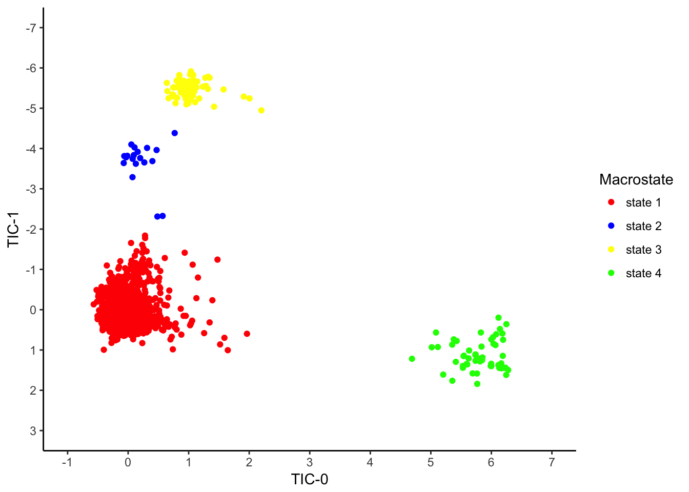

Scatterplot
Import Data
#---Loading data---#
load(url('https://github.com/MingChen0919/gst-colloquium-workshop-2018/raw/master/content/datasets/datasets.RData'))Load ggplot2 library
#---loading ggplot library---#
library(ggplot2)Visualization
Plot One; collective variables and macrostates
- Geom object: point
- TIC-0 -> x
- TIC-1 -> y
- Macrostate -> color
#---plot one---#
ggplot(energy_tics) +
geom_point(mapping = aes(x = TIC0, y = TIC1, color = as.factor(macrostate)),
stat = "identity",
position = "identity") +
coord_cartesian() +
facet_null() +
##----map data values to visual values---##
scale_x_continuous() +
scale_y_continuous() +
scale_color_identity() +
theme()
Plot Two; manipulating axes, point colors
- Geom object: point
- TIC-0 -> x
- TIC-1 -> y
- Macrostate -> color
- Plot edits
- Set the axis labels (breaks)
- Set the axis limits (limits)
- Change axis orientation (trans = “reverse”)
- Change colors for macrostates (scale_color_manual())
- Set labels for macrostates (breaks; labels)
- Change theme (theme_classic())
- Set the axis labels (breaks)
#---plot two---#
ggplot(energy_tics) +
geom_point(mapping = aes(x = TIC0, y = TIC1, color = as.factor(macrostate)),
stat = "identity",
position = "identity") +
coord_cartesian() +
facet_null() +
##----map data values to visual values---##
scale_x_continuous(name = "TIC-0",
breaks = c(-1, 0, 1, 2, 3, 4, 5, 6, 7),
limits = c(-1, 7)) +
scale_y_continuous(name = "TIC-1",
breaks = -7:3,
trans = "reverse",
limits = c(3, -7)) +
scale_color_manual(values = c("1" = "red", "2" = "blue", "3" = "yellow", "4" = "green"),
name = "Macrostate",
breaks = c(1,2,3,4),
labels = c('state 1', 'state 2', 'state 3', 'state 4')) +
theme_classic()
Plot Three; add additional factor to visualize
- Geom object: point
- TIC-0 -> x
- TIC-1 -> y
- Macrostate -> shape
- Energy -> color
- Plot edits
- Energy added as parameter
- Change macrostate label
#---plot three---#
ggplot(energy_tics) +
geom_point(mapping = aes(x = TIC0, y = TIC1, shape = as.factor(macrostate), color = Energy),
stat = "identity", position = "identity") +
coord_cartesian() +
facet_null() +
##----map data values to visual values---##
scale_x_continuous() +
scale_y_continuous() +
scale_color_gradient() +
scale_shape_discrete() +
theme() +
##---change macrostate legend label---##
labs(shape="Macrostate") 
Plot Four; manipulate color gradients, specify point shapes
- Geom object: point
- TIC-0 -> x
- TIC-1 -> y
- Macrostate -> shape
- Energy -> color
- Plot edits
- Change color gradient for energy (scale_color_gradient)
- Specify shapes for macrostates
#---plot four---#
ggplot(energy_tics) +
geom_point(mapping = aes(x = TIC0, y = TIC1, shape = as.factor(macrostate), color = Energy),
stat = "identity", position = "identity") +
coord_cartesian() +
facet_null() +
##----map data values to visual values---##
scale_x_continuous(name = "TIC-0",
breaks = -1:8) +
scale_y_continuous(name = "TIC-1",
breaks = -6:3) +
scale_color_gradient(low="blue", high="red",
breaks = 0:8) +
scale_shape_manual(values = c("1" = 15, "2" = 17, "3" = 19, "4" = 22),
name = "Macrostate") +
theme_classic()Plot Five; add confidence ellipses
- Geom object: point
- TIC-0 -> x
- TIC-1 -> y
- Macrostate -> shape
- Energy -> color
- Geom object: path
- TIC-0 -> x
- TIC-1 -> y
- Macrostate -> color
- confidence ellipse -> stat
- Plot edits
- Change legend labels (labs())
#---plot five---#
ggplot(energy_tics) +
geom_point(mapping = aes(x = TIC0, y = TIC1, fill = Energy, shape = as.factor(macrostate)),
stat = "identity", position = "identity", inherit.aes = FALSE) +
geom_path(mapping = aes(x = TIC0, y = TIC1, color = as.factor(macrostate)),
stat = "ellipse", inherit.aes = FALSE) +
coord_cartesian() +
facet_null() +
##----map data values to visual values---##
scale_x_continuous(name = "TIC-0",
breaks = -1:8) +
scale_y_continuous(name = "TIC-1",
breaks = -6:3) +
scale_shape_manual(values = c("1" = 22, "2" = 24, "3" = 23, "4" = 25)) +
scale_fill_gradient(low = "blue", high = "red") +
scale_color_discrete() +
theme_classic() +
##---change macrostate legend label---##
labs(shape="Macrostate", color = "Macrostate")